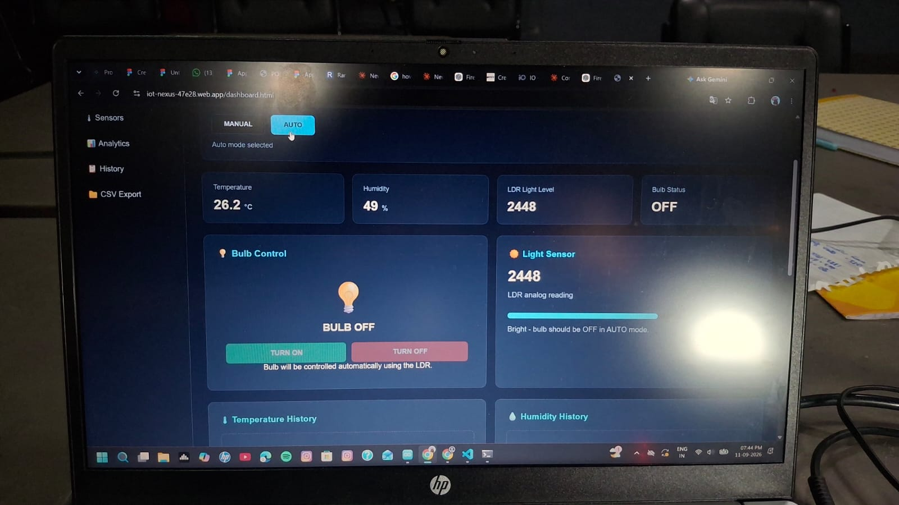

Firebase IoT Monitoring Dashboard
Production full-stack IoT architecture. Integrating Google Firebase Realtime Database and Firebase Authentication with an ESP32 edge node to stream real-time temperature, humidity, and ambient light telemetry, paired with authenticated bi-directional 230V AC appliance relay control.
Objective & Problem Definition
One-Paragraph Summary
The objective of this assignment is to architect a bespoke, secure, full-stack IoT telemetry and control platform utilizing Google Firebase Realtime Database and Firebase Authentication. By combining multi-sensor acquisition (DHT11 temperature & humidity, LDR ambient lighting) with high-voltage optoisolated relay switching and a secure user-authenticated single-page web dashboard, this project solves the fundamental limitation of proprietary no-code IoT brokers by providing granular data ownership, sub-second latency, and role-based access control.
The Problem Solved
Generic IoT portals (like Adafruit IO or Blynk) enforce strict data throttling, impose vendor lock-in, and lack flexible enterprise authentication models. Homeowners and plant managers require a custom web interface where multi-sensor environmental parameters can be monitored concurrently, with strict cryptographic authentication preventing unauthorized bad actors from manipulating physical mains-voltage appliances.
The Full-Stack Solution
We deployed an ESP32 edge microcontroller running the Firebase_ESP_Client library alongside a client-side JavaScript Single Page Application (SPA) hosted on Firebase Hosting at https://smart-home-3309d.web.app/#dashboard. Both nodes maintain real-time WebSocket connections to a shared NoSQL JSON document tree in Google Cloud.
Cloud Computing & Database Concepts
Theoretical foundations articulated from a Mechatronics and software engineering perspective.
What is Cloud Computing?
Cloud computing is the on-demand delivery of compute power, database storage, applications, and other IT resources via the internet with pay-as-you-go pricing. Instead of running physical servers in a local closet, computing workloads run across globally distributed data centers managed by hyper-scalers (Google Cloud, AWS, Microsoft Azure).
Cloud Service Models: IaaS, PaaS, SaaS & BaaS
- IaaS (Infrastructure as a Service): Raw virtual machines, networking, and storage (e.g., AWS EC2, Google Compute Engine). You manage the OS and runtime.
- PaaS (Platform as a Service): Managed execution environment where you deploy source code without managing the OS (e.g., Heroku, Render).
- SaaS (Software as a Service): End-user web applications accessible directly in the browser (e.g., Gmail, Google Docs).
- BaaS (Backend as a Service): Pre-built cloud backends providing authentication, real-time NoSQL databases, push notifications, and hosting through unified client SDKs (e.g., Google Firebase).
What is a Database?
An organized, electronically stored collection of data. While traditional relational databases (SQL) organize data into structured tables with rigid schemas, NoSQL databases store data as flexible JSON trees or key-value pairs, ideal for rapidly changing IoT sensor streams.
Firebase Realtime Database
A cloud-hosted NoSQL JSON database. Whenever any client (the ESP32 or the web browser) writes to a node in the tree, all other connected clients listening to that node receive the update within milliseconds over a persistent bi-directional WebSocket connection.
Authentication vs. Authorization
Authentication (AuthN): "Who are you?" Verifying user identity via email/password credentials or JWT cryptographic tokens.
Authorization (AuthZ): "What are you allowed to do?" Determining whether an authenticated user has permission to toggle the physical 230V relay or only view read-only sensor telemetry.
System Architecture & NoSQL Data Schema
LDR Analog Divider
(Firebase ESP Client)
(smart-home-3309d)
(Chart.js + UI Cards)
Firebase Realtime Database JSON Tree Schema
{
"sensors": {
"temperature": 27.8, // Current DHT11 temperature in degrees Celsius
"humidity": 64.0, // Current DHT11 relative humidity in percentage
"light_level": 742, // Scaled ambient light reading from LDR ADC (0-1000)
"last_updated": 1722409852 // Unix epoch timestamp synchronized via NTP
},
"controls": {
"bulb_state": true, // Boolean relay actuation state: true = ON, false = OFF
"manual_mode": true, // Mode toggle: true = Manual control, false = Automated LDR
"ldr_threshold": 450 // Calibration threshold for automatic night lighting
}
}Hardware & Software Specifications
| Hardware / Software Tool | Specification | Role in System |
|---|---|---|
| ESP32 DevKit V1 | Xtensa Dual-Core 240MHz, 2.4GHz Wi-Fi | Performs ADC sampling, handles DHT protocol, synchronizes with Firebase |
| DHT11 Sensor | Temp Range: 0–50°C (±2°C), Hum: 20–90% (±5%) | Measures ambient environmental temperature and relative humidity |
| LDR (Photoresistor) | Light resistance ~1kΩ (Daylight) to >100kΩ (Dark) | Connected in voltage divider to sense ambient illumination |
| Optocoupled Relay Module | Songle 5V Relay, 10A 250VAC / 10A 30VDC | Safely switches mains voltage AC incandescent bulb |
| Google Firebase Platform | Realtime Database + Firebase Hosting + Auth | Serverless cloud storage, WebSocket broker, and web hosting |
| Web Frontend Stack | HTML5, CSS3, JavaScript (ES6+), Chart.js | Single Page Application dashboard with responsive glassmorphism |
Wiring, Pin Connections & Sensor Interfacing
| ESP32 Pin | Interfaced Component | Circuit Topography | Logic / Operational Behavior |
|---|---|---|---|
GPIO 4 |
DHT11 DATA Pin | Pulled up to 3.3V with 10kΩ resistor | Single-wire bidirectional asynchronous digital protocol |
GPIO 34 |
LDR Voltage Divider Junction | LDR in series with 10kΩ fixed resistor to GND | ADC1 analog voltage input (12-bit resolution: 0 to 4095) |
GPIO 18 |
Relay Module IN Pin | Connected directly to relay optocoupler input | Digital Output: HIGH = Energize coil (Relay ON) / LOW = OFF |
3.3V & GND |
DHT11 & LDR Power Rails | Filtered 3.3V supply from onboard AMS1117 | Reference voltage for accurate ADC and sensor operations |
5V (VIN) & GND |
Relay Module VCC & GND | Direct 5V supply line | Drives mechanical relay coil without overloading 3.3V LDO |
ESP32 Firmware & Frontend Source Code
Clean, fully documented production firmware and client-side web application code.
#include <WiFi.h>
#include <Firebase_ESP_Client.h>
#include <DHT.h>
#include "time.h"
// Wi-Fi Credentials
#define WIFI_SSID "YOUR_WIFI_SSID"
#define WIFI_PASSWORD "YOUR_WIFI_PASSWORD"
// Firebase Project Credentials
#define API_KEY "AIzaSyXXXXXXXXXXXXXXXXXXXXXXXXX"
#define DATABASE_URL "https://smart-home-3309d-default-rtdb.firebaseio.com/"
#define USER_EMAIL "user@smarthome.io"
#define USER_PASSWORD "SecretPassword123"
// Hardware Pin Definitions
#define DHTPIN 4
#define DHTTYPE DHT11
#define LDR_PIN 34
#define RELAY_PIN 18
// Sensor & Firebase Instances
DHT dht(DHTPIN, DHTTYPE);
FirebaseData fbdo;
FirebaseAuth auth;
FirebaseConfig config;
// Timing Control (Non-blocking intervals)
unsigned long lastSensorPublish = 0;
const unsigned long sensorInterval = 2500; // Sample every 2.5 seconds (respects DHT11)
void setup() {
Serial.begin(115200);
pinMode(RELAY_PIN, OUTPUT);
digitalWrite(RELAY_PIN, LOW);
dht.begin();
// Connect to Wi-Fi
Serial.print("Connecting to Wi-Fi");
WiFi.begin(WIFI_SSID, WIFI_PASSWORD);
while (WiFi.status() != WL_CONNECTED) {
delay(500);
Serial.print(".");
}
Serial.println("\n[Wi-Fi] Connected!");
// Synchronize internal clock via NTP (prevents SSL token expiration)
configTime(19800, 0, "pool.ntp.org", "time.nist.gov");
Serial.println("[NTP] Clock synchronized");
// Configure Firebase Credentials
config.api_key = API_KEY;
config.database_url = DATABASE_URL;
auth.user.email = USER_EMAIL;
auth.user.password = USER_PASSWORD;
// Initialize and authenticate
Firebase.begin(&config, &auth);
Firebase.reconnectWiFi(true);
Serial.println("[Firebase] Initialized and authenticated!");
}
void loop() {
// Periodically read sensors and publish to Firebase
if (Firebase.ready() && (millis() - lastSensorPublish >= sensorInterval)) {
lastSensorPublish = millis();
float temp = dht.readTemperature();
float hum = dht.readHumidity();
int ldrRaw = analogRead(LDR_PIN);
// Scale 12-bit ADC (0-4095) down to 0-1000 for intuitive dashboard viewing
int lightLevel = map(ldrRaw, 0, 4095, 0, 1000);
if (!isnan(temp) && !isnan(hum)) {
Firebase.RTDB.setFloat(&fbdo, "/sensors/temperature", temp);
Firebase.RTDB.setFloat(&fbdo, "/sensors/humidity", hum);
Firebase.RTDB.setInt(&fbdo, "/sensors/light_level", lightLevel);
Serial.printf("[TELEMETRY] Temp: %.1f C | Hum: %.1f %% | Light: %d\n", temp, hum, lightLevel);
}
}
// Stream/Poll Relay Actuation State from Cloud
if (Firebase.ready()) {
if (Firebase.RTDB.getBool(&fbdo, "/controls/bulb_state")) {
bool targetState = fbdo.boolData();
digitalWrite(RELAY_PIN, targetState ? HIGH : LOW);
}
}
}import { initializeApp } from "https://www.gstatic.com/firebasejs/9.22.0/firebase-app.js";
import { getDatabase, ref, onValue, set } from "https://www.gstatic.com/firebasejs/9.22.0/firebase-database.js";
import { getAuth, signInWithEmailAndPassword, onAuthStateChanged } from "https://www.gstatic.com/firebasejs/9.22.0/firebase-auth.js";
// Firebase Configuration
const firebaseConfig = {
apiKey: "AIzaSyXXXXXXXXXXXXXXXXXXXXXXXXX",
authDomain: "smart-home-3309d.firebaseapp.com",
databaseURL: "https://smart-home-3309d-default-rtdb.firebaseio.com",
projectId: "smart-home-3309d",
storageBucket: "smart-home-3309d.appspot.com"
};
const app = initializeApp(firebaseConfig);
const db = getDatabase(app);
const auth = getAuth(app);
// Realtime Telemetry Listeners
const tempDisplay = document.getElementById("temp-val");
const humDisplay = document.getElementById("hum-val");
const lightDisplay = document.getElementById("light-val");
const bulbToggle = document.getElementById("bulb-toggle-btn");
// Listen for Live Sensor Changes
onValue(ref(db, "sensors"), (snapshot) => {
const data = snapshot.val();
if (data) {
tempDisplay.textContent = `${data.temperature.toFixed(1)} °C`;
humDisplay.textContent = `${data.humidity.toFixed(1)} %`;
lightDisplay.textContent = `${data.light_level} lx`;
}
});
// Listen for Live Relay State
onValue(ref(db, "controls/bulb_state"), (snapshot) => {
const isBulbOn = snapshot.val();
bulbToggle.textContent = isBulbOn ? "TURN BULB OFF" : "TURN BULB ON";
bulbToggle.className = isBulbOn ? "btn btn-danger" : "btn btn-success";
});
// Handle User Click to Dispatch Cloud Command
bulbToggle.addEventListener("click", () => {
const currentState = bulbToggle.textContent.includes("OFF");
set(ref(db, "controls/bulb_state"), !currentState);
});Firebase Console Setup & Security Rules
1. Project Creation
Created project smart-home-3309d on Firebase Console. Provisioned Realtime Database situated in the us-central1 location.
2. Authentication Config
Enabled the Email/Password sign-in provider under the Authentication tab. Generated administrator credentials for authorized dashboard and ESP32 authentication.
3. Database Security Rules
Configured rules requiring authenticated token headers for write operations: ".read": "auth != null", ".write": "auth != null", ensuring public guests cannot tamper with relay actuators.
Hardware & Cloud Verification Evidence

smart-home-3309d.web.app displaying real-time Temperature (°C), Humidity (%), Light Level gauge, and interactive Bulb ON/OFF relay control.

Demonstration Video: Live Monitoring & Cloud Bulb Actuation
Demonstration showing browser button toggle causing instant relay energization, accompanied by real-time temperature fluctuations when blowing over the DHT11 sensor.
Watch Task 4 Demonstration Video →Challenges Encountered & Root-Cause Fixes
During testing, every second or third temperature reading printed NaN on the serial monitor and wrote null values to the Firebase database, corrupting the dashboard metrics.
Root Cause: The DHT11 capacitive humidity sensor requires a minimum 1.5 to 2.0-second recovery interval between read attempts. My original loop was polling dht.readTemperature() every 300ms, corrupting the internal single-wire 40-bit pulse packet.
Implemented a non-blocking millis() accumulator gate: if (millis() - lastRead >= 2500). Gating sensor sampling to strictly once every 2.5 seconds completely eliminated NaN errors and delivered a 100% stable data stream.
The ESP32 connected to Wi-Fi successfully but failed to authenticate with Firebase, reporting [ERROR] SSL Handshake Failed: Certificate expired or invalid date.
Root Cause: Upon boot, the ESP32 internal Real-Time Clock (RTC) initialized to UNIX epoch 0 (January 1, 1970). Google Firebase SSL certificates carry valid-from/valid-to timestamp constraints; the ESP32 rejected the certificates because it believed it was operating in 1970!
Added an NTP time synchronization step immediately after Wi-Fi connection in setup(): configTime(19800, 0, "pool.ntp.org", "time.nist.gov");. Once the ESP32 synced its internal clock to the true current time, the SSL handshake succeeded instantly on the first try.
Learning Reflection & Next Steps
Full-Stack IoT Comprehension
This station bridged embedded C++ firmware with cloud NoSQL databases and modern JavaScript web frontends. Developing a custom dashboard highlighted how WebSockets minimize latency compared to polling, and underscored the absolute necessity of rigorous token-based authentication when controlling physical AC loads.
Advancement to Station 05
While live telemetry is vital, industrial systems also require historical data logging, automated closed-loop LDR hysteresis control, and regulatory CSV data export. Station 05 unites all these features into the final master project.
Project Repository & Verification Checklist
Station 04 Deliverables Compliance Matrix
Access Complete Source Files
All code, circuit schematics, Firebase rules, and frontend web assets for Station 04 are available in the GitHub repository.